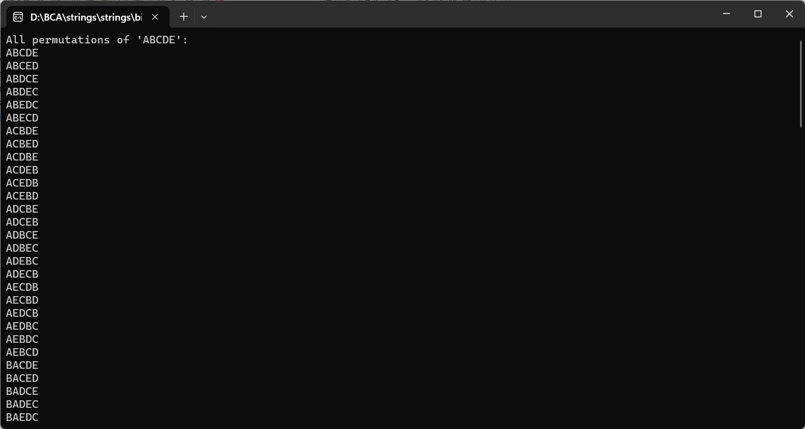

PRINT ALL THE PERMUTATION OF A STRING I.E. "ABCDE"
#include
void swap(char *x, char *y) {
char temp = *x;
*x = *y;
*y = temp;
}
void permute(char *str, int start, int end) {
if (start == end) {
printf("%s\n", str);
} else {
for (int i = start; i <= end; i++) {
swap((str + start), (str + i));
permute(str, start + 1, end);
swap((str + start), (str + i)); // Backtrack to restore the original string
}
}
}
int main() {
char input[] = "ABCDE";
int n = sizeof(input) / sizeof(input[0]) - 1; // -1 to exclude the null terminator
printf("All permutations of 'ABCDE':\n");
permute(input, 0, n - 1); // Start with the first and last index
return 0;
}
